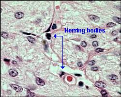
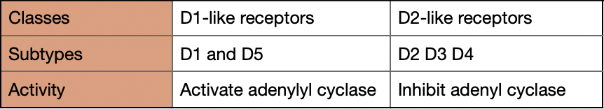
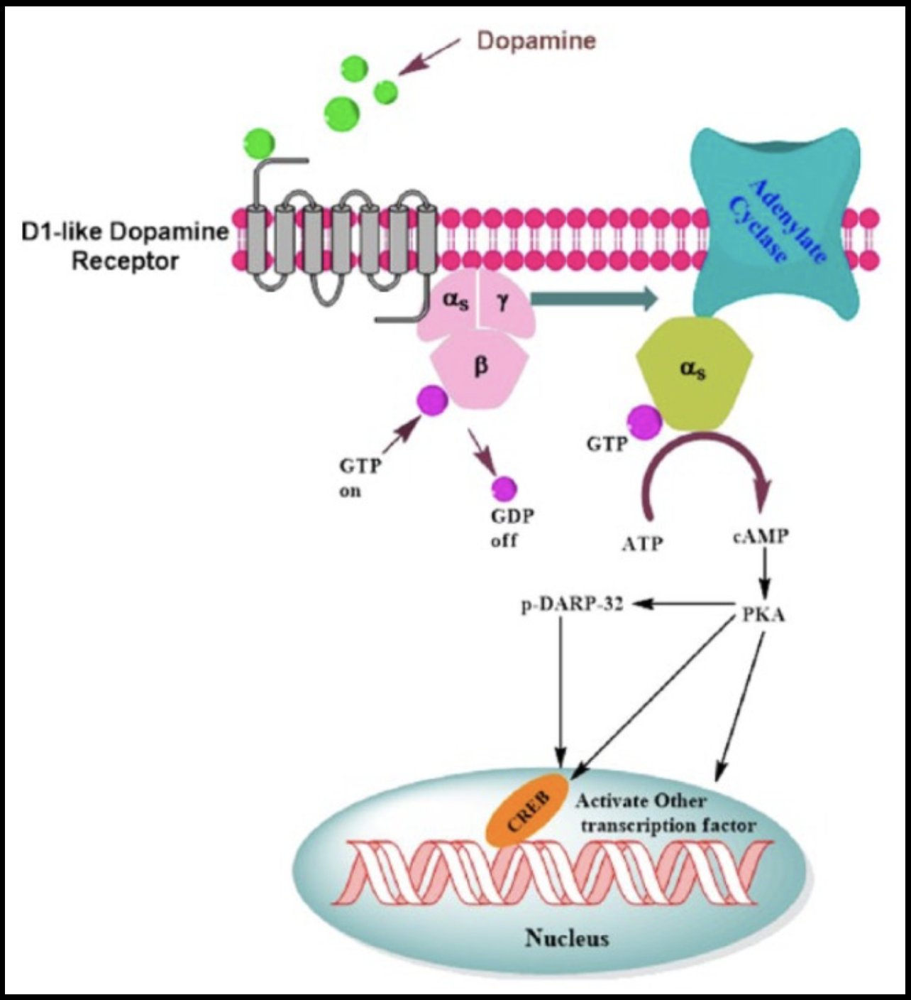
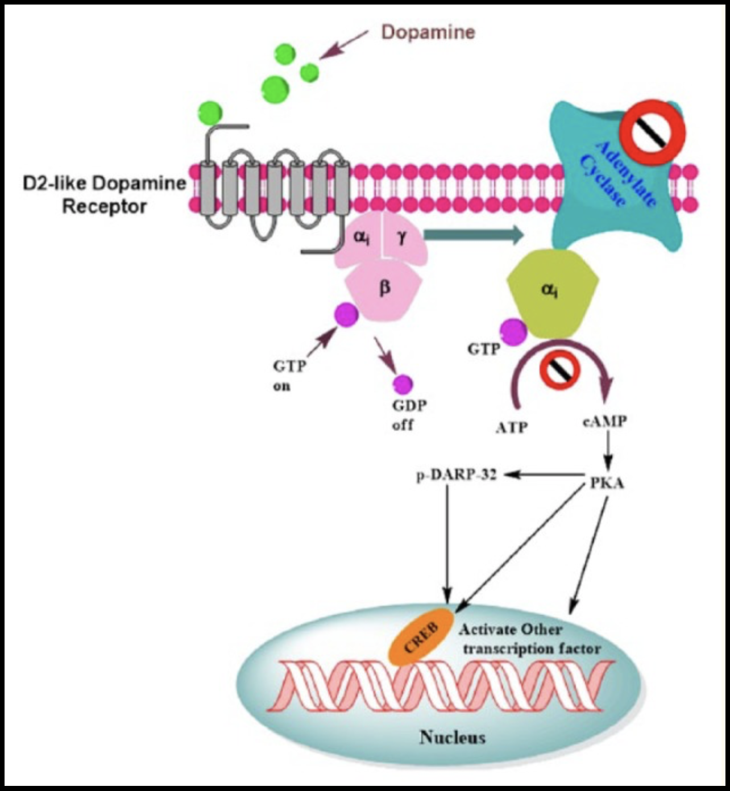
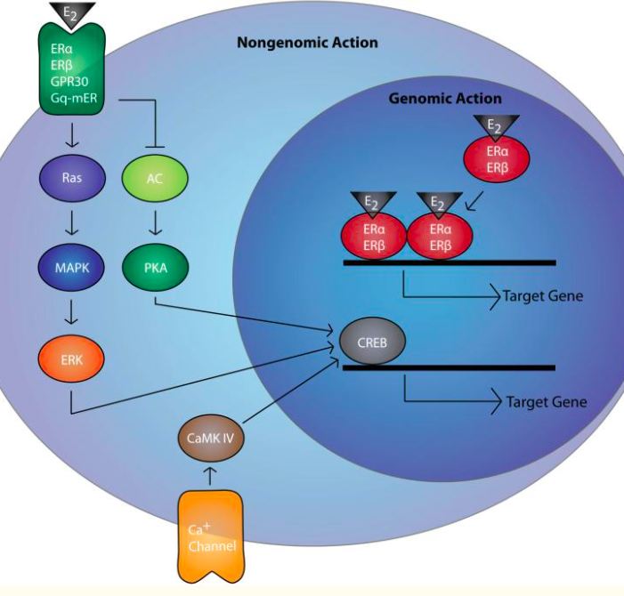

Social Hormones
This is a template showcasing the optional theme stylesheet included in Bootstrap. Use it as a starting point to create something more unique by building on or modifying it.
This is a template showcasing the optional theme stylesheet included in Bootstrap. Use it as a starting point to create something more unique by building on or modifying it.
Oxytocin is considered as both a hormone and a neuromodulator. Oxytocin is involved in multiple functions: childbirth, sex thrive, and social behavior. It is a nine amino acid peptide produced by the paraventricular nucleus and supraoptic nucleus of the hypothalamus. The posterior lobe of the pituitary receives axonal projections from the hypothalamus and oxytocin is released by the neurohypophysis. In addition, oxytocin neurons originating from the PVN form projections with other parts of the brain such as the amygdala, the hippocampus, the nucleus accumbens and the ventral tegmental area.
Oxytocin inhibits neurons in the amygdala that connects to other brain regions associated with fear such as the anterior cingulate cortex (ACC) and the medial prefrontal cortex (MPC). One of the roles of oxytocin is to reduce the activation of ACC and MPC and thus reduces social anxiety. CD28 is the cyclic ADP ribose nuclease which is a glycoprotein localized at cell’s surface and is know to control oxytocin release.
Oxytocin is mainly synthesized in the PVN (paraventricular hypothalamic nucleus) and supraoptic nucleus (SON), stored in the Heering bodies and released into the systemic circulation from the posterior pituitary. ADP-ribosyl cyclase activity is high in the hypothalamus and in the posterior pituitary. The lack of CD38 results in the decrease of ADP-ribosyl cyclase activity and thus lower cADPR formation which leads to alterations in OXT secretion in the hypothalamus and the pituitary. When it is released the oxytocin mainly binds to its receptor but it also has a weak affinity for the vasopressin receptor. Oxytocin binds to an oxytocin receptor known as OXTR, which belongs to the G-protein coupled seven transmembrane receptor family.
Oxytocin was shown to be involved in many psychiatric disorders such as autism spectrum disorder (ASD), schizophrenia, mood and anxiety disorders. We here present the etiology for those oxytocin disorders based on a review of oxytocin's role in psychiatric disorders.
Oxytocin has been demonstrated to have a role in social recognition, attachment and stereotyped behaviors in mouse models. As these correlate with deficits in ASD it has led to the research of oxytocin’s role in ASD pathophysiology (and potential therapeutic target). Lower plasma oxytocin levels in children with autism correlated to increased peptide inactive forms of oxytocin derived from the same prohormone, so ASD in children might come from a defect in peptide processing. However, studies in adults show conflicting results regarding oxytocin plasma levels. Genetically, specific alleles or SNPs in the oxytocin gene and OXTR were associated with ASD, but there is lack of consistency among different studies, each finding associations in different regions. However, the fact that association with oxytocin and OXTR genes are found indicates that the oxytocin system is indeed involved in ADS. Epigenetic causes could also be related to ASD, as regions regulating expression of OXTR were found to be hypermethylated, showing again the importance of oxytocin related genes in the pathophysiology of ASD.
Data on whether or not plasma or CSF oxytocin levels are associated with schizophrenia are conflicting. Some studies indicate that lower plasma levels and higher CSF levels correlate with more psychotic symptoms, whereas others indicate no difference between patients and healthy controls. For the genetic causes, early studies have found that different OXT and OXTR variants were associated with schizophrenia, while more recent studies didn’t find any association. In addition, some of these association studies were not significant after correction for multiple testing. Taken together, these studies present less evidence for a role of the oxytocin system in the pathophysiology of schizophrenia than for ASD and more research needs to be done in this field.
Through its close link to corticotropin-releasing factor, oxytocin plays major roles in the stress response and has therefore been studied for its association to mood and anxiety disorders. Many studies have focused on major depressive disorder (MDD) and bipolar disorder (BD), but measurements on plasma and CSF oxytocin levels again show conflicting results. The presented studies suggest that there is a complex relation between oxytocin and mood disorders with a multitude of factors that could influence pathophysiology. On the genetic side, association studies have found that 2 SNPs in the oxytocin receptor correlated with MDD, but no genetic cause could be found for BD.
In addition to the disease previously mentioned, oxytocin’s role in stress response, repetitive behaviors, and temperamental differences have led to investigations into anxiety disorders, obsessive-compulsive disorders (OCD), and personality disorders. The main focus of the presented studies is the impact of plasma and CSF oxytocin levels on those disorders.
Anxiety
Studies showed that the severity of social anxiety symptoms was correlated with higher oxytocin plasma levels and that levels after playing a trust game were significantly lower for anxious patients.
Obsessive-compulsive disorders
CSF oxytocin levels were observed to be positively correlated with depressive symptoms in children with OCD, but no correlation to OCD symptoms was found. Also, increased CSF levels in OCD patients compared to control groups were found, but only significant in a subgroup without tic disorder. Furthermore, oxytocin levels were associated with severity of OCD symptoms in a non-tic related subgroup.
Personality disorders
Animal experiments have served to demonstrate a link between aggressive behavior and oxytocin, which led to further studies in humans. In a study comparing individuals with personality disorders with healthy controls, CSF oxytocin levels were inversely correlated to aggression scores. Another exploratory analysis revealed that suicide attempters had lower CSF oxytocin levels than non-attempters. Finally, lower plasma oxytocin levels were associated with borderline personality disorder in females and linked to experiences of emotional neglect and abuse in childhood.
Oxytocin is released by the axon terminals of the neurohypophysis in so-called Herring bodies. On electron microscopy images, these are dilated areas in the terminal portion of axons with clusters of neurosecretory granules (containing oxytocin, antidiuretic hormone and neurophysins). Herring bodies often lie close to capillaries, which can be seen on the following image showing the axon terminals of the neurohypophysis.

Alterations of genes involved in oxytocinergic signaling could be associated with differences in socio behavioral phenotypes. Principally:
In particular OXTR SNPs (single nucleotide polymorphisms) are associated with structural and functional alterations in limbic circuitry involving the amygdala, the hypothalamus and the cingulate gyrus.
It was shown that variants in rs53576 allele could be associated with:
Variants in rs53576 allele could be associated with:
There are evidence that OXTR methylation may be dynamically regulated by psychosocial stress exposure, and it is associated with high callous unemotional (CU) traits and differential activation of brain regions involved in social perception.In the OXTR gene are present CpG island that stretches from about 20 to 2350 bp downstream of the transcription start site. CpG islands are regions of genome with high CpG density, where C stands for cytosine and G for guanine. Some investigations of hepatoblastoma cell line shown that the methylation of the OXTR CpG island functionally suppresses transcription. It was also identified a region of the OXTR CpG island, termed MT2, which seems to be responsible for most DNA methylation-induced silencing of these constructs. Deletion of the MT2 region in the full-length construct led to a relative rescue of transcriptional activity of the methylated construct to 68%. Finally, it possible to conclude that regulation of OXTR is sensitive to methylation within the MT2 region of the CpG island, and points toward functional significance of this region.
More deeply:
Callous unemotional traits:
There are evidence that OXTR promoter methylation is associated with CU traits in young males (9-16 years). Even if it is unclear whether the increased methylation levels related with high CU traits reflect cumulative environmental exposure and is causally related to disturbances of social behaviour, or whether OXTR methylation is a consequence or epiphenomenon of high CU traits caused by other factors.
Social perception:
OXTR methylation of a particular CpG site derived from PBMCs (peripheral blood mononuclear cell) have significantly greater activation in two brain clusters: -from the superior temporal gyrus to supramarginal gyrus at the temporal parietal junction -in the dorsal anterior cingulate cortex (dACC) The temporal parietal junction has been linked to the attributions of intentions, perception of biological motion cues, and mentalizing behaviors.
Psychosocial stress:
After acute stress exposure, methylation status of OXTR DNA of 35CpG sites (located mainly in the protein coding part of exon 3) increased immediately and then decreased to below baseline levels 90 min post-stress.
Dopamine dictates the behavior of individuals through the pathway of reward/prediction which is responsible for motivation. Due to evolution, some activities that help for the survival for the individual or his offspring such as eating and sex are made pleasurable.
  
Estrogen is a type of sex hormone involved in female reproduction and development of secondary sex characteristics.Estradiol is the most prevalent endogenous estrogens that have estrogenic hormonal activity.

Estrogen act via genomic or non-genomic cascades. When estradiol E2 binds to nuclear estrogen receptor ERα and ERβ, the receptor complex dimerizes and binds to estrogen response elements (ERE) promoting downstream gene expression reflects as the genomic pathways.
E2 can also promote the activation of rapid cascade via membrane bound receptors which involved MAPK activation and downstream targets such as ERK and CREB, representing so the non-genomic pathway. In particular increased the number of pERK–ir cells in the BNST(bed nucleus of the stria terminalis) and MEA(medial amygdala) under short days but not long days and pERK cell counts in the BNST and MEA were positively correlated with aggressive behaviors.
These rapid non genomic actions carried out by estrogens seems have important effects on behavior, with high dependence of environment.These behaviors are differently affected principally by three estrogen receptors (ERs), ERα, ERβ, and the G protein-coupled ER 1(GPER1)
Experiments on rodents, quail and songbirds show that environmental features such as photoperiod (day length), endocrine disruptors and phytoestrogens impact the pathways involving estradiol.
Rapid effects of estradiol on aggression was seen in rodents with winter like photoperiods and, through analyses on genes controlled by estrogen response elements (ERE) in the promoter region, it was seen that short day photoperiods inhibit estrogen-dependent transcription in neural networks controlling aggression.
It was principally evidenced that lacking ERα lead to a reduced aggression, instead of lacking ERß which causes higher levels of aggression as compared to wild type mice. Photoperiod induce changes in nuclear estrogen receptors are not directly responsible for the effects of short days aggression but more closely linked to short-day induced decreases in circulating testosterone.
These effects of photoperiod are independent of changes in gonadal hormones, so the behaviourally active estrogens are probably synthesized in the brain.
Sexual behavior and aggression are highly associated. Estrogens have rapid effects on mating behaviors and several experiments on male rats and comet goldfish shown as estradiol administrations induce in only 15-30 minutes copulatory behavior; mice spend more time in proximity to a female (higher proximity score).
Local estradiol synthesis, and/or conversion of testosterone to estradiol via aromatase activity are the pathway through which sexual behavior is mediated.
ERα agonist but not ERß one, rapidly facilitate social recognition behavior in mice, suggesting a role of ERα as mediator of rapid effects of estrogens on learning behavior. There are also evidences that ERα mediate rapid effect of estrogen on hippocampal morphology, working at extracellular site could rapidly affect LTD, long term depression.
Many plants produce estrogen-like composite and also many industrial chemicals have estrogen like properties. In particular, corncob bedding is becoming one of the most wide-spread sources of phytoestrogens. Phytoestrogens such as isoflavone can affect behaviors mediated by the rapid action of estrogens; in particular phytoestrogens may be acting as an ER antagonist to affect sexual behavior in rodents.
Furthermore, exposure to endocrine disruptor such as Bisphenol A (BPA), a major component of many plastics, was found to increase aggression in mice and rats. Its effects can be especially long lasting, because these compounds can induce long lasting changes in DNA methylation in the brain.